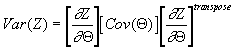

The HAZPRED Procedure
The Cleveland Clinic Foundation.[1]
TABLE OF CONTENTS
Conflicting SAS Variable Names
Structure of Input Data Set of Estimates
Confidence Limits Around Point Estimates
ABSTRACT
PROC HAZPRED is a procedure for calculation of time-related estimates (predictions) from a parametric equation previously established by PROC HAZARD.
INTRODUCTION
The HAZPRED procedure uses an estimates data set produced by the OUTHAZ option in PROC HAZARD and an input data set of values for variables to generate predictions from that parametric equation specification in the form of an output data set. The estimates data set contains equation specifications, parameter estimates, status flags, and the variance-covariance matrix. By input of specific values for the time variable and for each of the covariables that may be defined in the equation, PROC HAZPRED calculates maximum-likelihood survivorship and hazard function estimates and their confidence limits. In addition, survivorship and hazard function estimates are provided in the output data set for each hazard phase.
With both survivorship and hazard function estimates available, other survival functions may be calculated subsequently, such as the death density function, cumulative hazard function, lifetime function, and cumulative incidence functions (for competing risks of events).
There is no printed
output from PROC HAZPRED.
SYNTAX
Since PROC HAZPRED is now an external program, rather than integrated into SASÒ by means of its Toolkit, the procedure must be enclosed within a macro calling sequence as follows:
%HAZPRED(
PROC HAZPRED etc;
);
SPECIFICATIONS
The following statements can be used with the HAZPRED procedure:
PROC HAZPRED options;
TIME
variable_name;
The TIME statement is required.
The PROC HAZPRED Statement
PROC HAZPRED options;
This statement invokes the procedure. The following options are available:
The TIME Statement
TIME variable_name;
The TIME statement names a variable in the input data set that contains values for the time of the event. It must be expressed in the same units of time that were used in PROC HAZARD for the data analysis. (The time of event variable can be any other positive-valued variable whose distribution was modeled parametrically). The values must be positive numbers, greater than zero, otherwise calculations are not performed and missing values are generated for all variables output from PROC HAZPRED.
CAUTIONS
Time Zero
The model is defined within the interval zero to infinity, but at exactly zero or infinity the model is defined only by limits. The survivorship function is 1.0 at t=0. However, the hazard function will be exactly zero or infinity in many cases, although certain combinations of parameters will generate finite values, as might also occur with the inclusion of the constant hazard phase. Consequently, PROC HAZPRED outputs missing values for the hazard function when t=0.
Conflicting SAS Variable Names
The variable names output by PROC HAZARD have been selected to avoid conflict with usual SAS variable naming conventions. You should consider these HAZPRED names as restricted ones. In particular, if predictions are generated for a data set that has already been processed by HAZPRED, these names will be flagged as being duplicate
DETAILS
Missing Values
The HAZPRED procedure does not perform calculations if an observation has missing or inadmissible values for variables contained in the model or in the TIME statement. For such observations, missing values for variables generated by PROC HAZPRED are output.
Structure of Input Data Set of Estimates
The input data set of parameter estimates and fixed values, model specifiers, and variance-covariance elements is output by PROC HAZARD and is structure as follows:
Observations
1 through 6: Model Specification
Flags
G1FLAG early phase equation flag
FIXDEL0 DELTA is to be fixed at zero (default)
FIXMNU1 |NU×M|=1 flag
G3FLAG late phase equation flag
FIXGE2 GAMMA×ETA=2 flag
FIXGAE2 (GAMMA×ETA)/ALPHA=2 flag
Observations 7 through 14: Shaping Model Parameter Estimates
This includes parameter estimates (_EST_) and a status flag (_STATUS_) set to 1 if estimated and 0 if the parameter was fixed or not in the model, followed by the variance-covariance matrix components.
DELTA
THALF
NU
M
TAU
GAMMA
ALPHA
ETA
Observations 15 through (17 + 3p): Intercepts and Covariables (p unique variables)
Each variable is followed by its estimate (_EST_), status flag (_STATUS_) for each of the phases, and variance-covariance components. The number of unique variables is found by adding all variables with a different variable_name in all hazard phases.
E0
Concomitant information variable 1 (variable_name used)
.
.
.
Concomitant information variable p (variable_name used)
C0
Concomitant information variable 1 (uses C01 as variable_name)
C02
.
.
.
C0(p-1)
Concomitant information variable p (used C0p as variable_name)
L0
Concomitant information variable 1 (uses L01 as variable_name)
L02
.
.
.
L0(p-1)
Concomitant information variable p (used L0p as variable_name)
COMPUTATIONAL METHOD
Point Estimates
Point estimates (predictions) are obtained by direct algebraic solution of the cumulative hazard and hazard function equations cited in the introductory section of this document, Parametric Analysis of Time-Related Events. The survivorship function is obtained by exponential transformation of the cumulative hazard function. When concomitant information is taken into account, so-called risk-adjusted and patient-specific estimates are formed.
Other useful functions can be calculated from the point estimates provided, including death density function, lifetime function, and cumulative incidence function for competing risk problems. In addition, various goodness-of-fit statistics can be generated using the estimates for individual patients in the study group. We have provided a SASÒ macro for accomplishing some of these (%MACRO HAZPLOT) as part of the available software for downloading. In addition, we have programs or macros available for looking at differences between survival and hazard functions, at internal verification of time-related shape for recognizable subsets, for bootstrapping, and so forth. Make inquiries, and if we have done it, we will provide examples.
Confidence Limits Around Point Estimates
Confidence limits for these point estimates are estimated using the method of statistical differentials (Ku, 1966). The formulation is made separately for the confidence limits of survivorship and hazard function estimates, based on transformations to an unbounded scale.
Survivorship Function
For confidence limits
of the survivorship function S(t,Q), a
logistic transformation is used (NOTE: we will abbreviate Z(t,Q) as Z
as originally suggested by Hazelrig and colleagues (1982) to simplify
notation):
or
where P(t,Q)=1-S(t,Q). Then, in terms of cumulative hazard L(t,Q):
and

Partial derivatives of Z with respect to the parameter vector theta required for the statistical differential are:
The first order approximation to the variance of Z, Var(Z), is

Then the confidence limits of Z are:

and
where is the inverse normal of the confidence coefficient a. Finally, Z- and Z+ are transformed to S(t,Q)+ and S(t,Q)-, respectively.
These survivorship confidence limits are generally asymmetrical except at S(t)=0.5. They converge to 1.0 as time t approaches zero, and to 0.0 as t approaches infinity. Also, they are consistent in width above and below S(t)=0.5 in that the confidence limits for the same variance of Z are the same as for S(t) and 1-S(t).
Hazard Function
For confidence limits of the hazard function l(t,Q), a logarithmic transformation is used:
and
The partial derivatives of Z with respect to the parameter vector theta are
The general scheme used for the survivorship estimates is then followed.
The transformation guarantees that the upper and lower confidence limits of the hazard function are always positive and asymmetric. The confidence limits are not consistent between the hazard and the survivorship functions, since the calculations use different transformations and asymptotic approximations. However, the results are reasonably consistent for data set with approximately one hundred or more observations.
EXAMPLES
Several examples are available in the accompanying data file.
REFERENCES
Hazelrig JB, Turner ME Jr, Blackstone EH. Parametric survival analysis combining longitudinal and cross-sectional-censored and interval-censored data with concomitant information. Biometrics 1982;39:1-15.
Ku HH. Notes on the use of propagation of error formulas. Journal of Research of the National Bureau of Standards 1966;70C:263-73